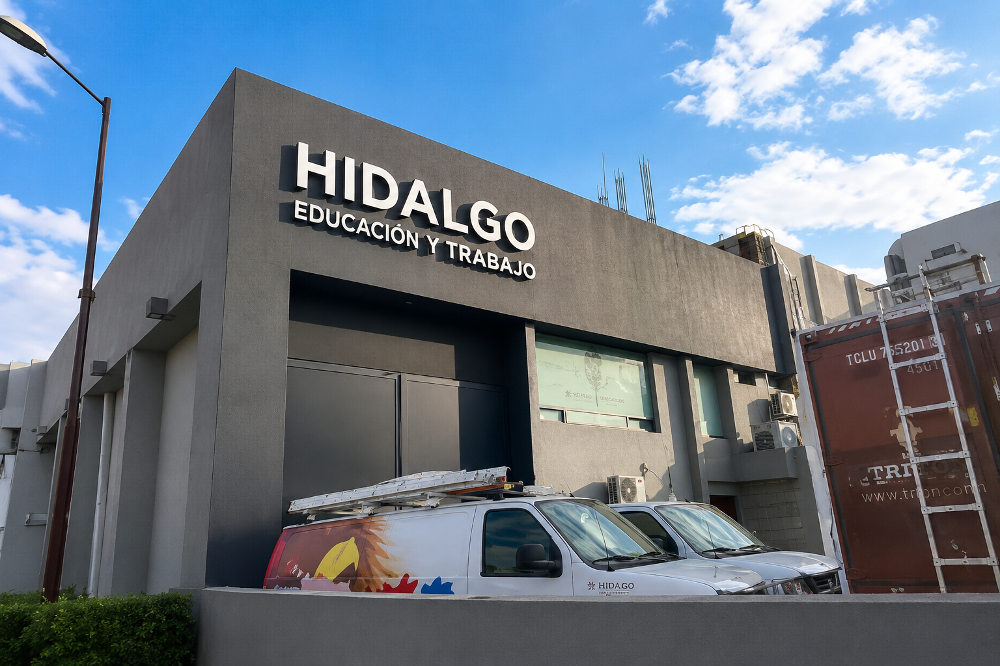

🎯 Misión de RTH

Radio y Televisión de Hidalgo tiene como misión ser un medio de comunicación público al servicio de la sociedad hidalguense, produciendo y transmitiendo contenidos de calidad que promuevan la educación, la cultura, la información y el entretenimiento.
Su objetivo es contribuir al desarrollo social del estado, acercando a la población contenidos relevantes, veraces y de interés general, respetando siempre la diversidad y los valores de la comunidad.
📡 ¿Qué produce y transmite?
Contenido educativo
Produce programas orientados a apoyar la educación de niños, jóvenes y adultos, reforzando los contenidos escolares y promoviendo el aprendizaje continuo en la población hidalguense.
Contenido cultural
Difunde la riqueza cultural del estado de Hidalgo, incluyendo tradiciones, festividades, artesanías, gastronomía y expresiones artísticas propias de las comunidades del estado.
Contenido informativo
Mantiene informada a la población sobre los hechos más relevantes del estado y del país, ofreciendo noticias, reportajes y programas de análisis con responsabilidad y veracidad.
📻 Sus medios de comunicación
RTH cuenta con una red de estaciones de radio y canales de televisión que permiten llegar a distintas regiones del estado de Hidalgo, garantizando que la información y los contenidos lleguen a la mayor cantidad de personas posible.
A través de sus plataformas digitales, RTH también ha ampliado su alcance, permitiendo que sus transmisiones lleguen más allá de las fronteras del estado y estén disponibles para cualquier persona con acceso a internet.
Radio
Cuenta con estaciones de radio que transmiten contenidos musicales, informativos y culturales para distintos públicos y regiones del estado de Hidalgo.
Televisión
Sus canales de televisión transmiten programas educativos, culturales, informativos y de entretenimiento, llegando a hogares de todo el estado.
Plataformas digitales
RTH está presente en internet, ofreciendo transmisiones en vivo, contenidos a la carta y presencia en redes sociales para conectar con más personas.
🌸 RTH y el Modelo Dual
Radio y Televisión de Hidalgo es una institución que abre sus puertas a estudiantes del Modelo Dual, brindándoles la oportunidad de conocer el funcionamiento de una institución pública de comunicación desde adentro.
Durante mi estancia pude conocer de cerca cómo se organiza y opera una institución de esta naturaleza, lo que enriqueció enormemente mi formación académica y me permitió desarrollar habilidades aplicables en el mundo laboral real. 💖